Assignment 1: Image Processing
Project Info
- David Calvo
- dcalvo2
- MSVC @ C++20 / Visual Studio 2019 (Community Edition) / Windows 10
- 0 Late Days used
Table of Contents
- addRandomNoise (Full)
- brighten (Full)
- luminance (Full)
- contrast (Full)
- saturate (Full)
- crop (Full)
- quantize (Full)
- randomDither (Full)
- orderedDither2x2 (Full)
- floydSteinbergDither (Full)
- blur3x3 (Full)
- edgeDetect3x3 (Full)
- nearestSample (Full)
- bilinearSample (Full)
- gaussianSample (Full)
- scaleNearest (Full)
- scaleBilinear (Full)
- scaleGaussian (Full)
- rotateNearest (Partial)
- rotateBilinear (Partial)
- rotateGaussian (Partial)
- setAlpha (Full)
- composite (Full)
- fun (Full)
- BeierNeelyMorph (Full)
- Myself with a very famous person
- Art Contest Submission
- Gif of my Beier-Neely Morphing filter
Implementation Details
addRandomNoise
--noisify 0.3
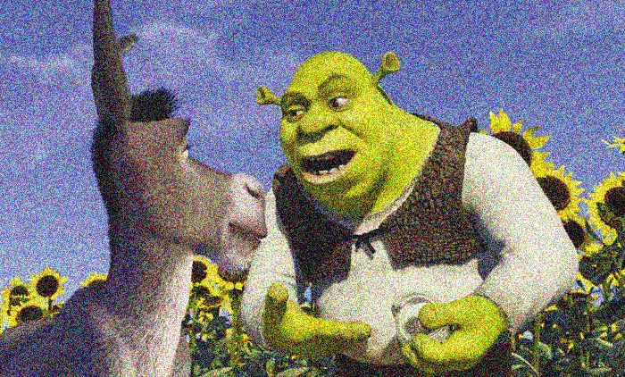
No notes. Fully implemented.
brighten
--brighten 2
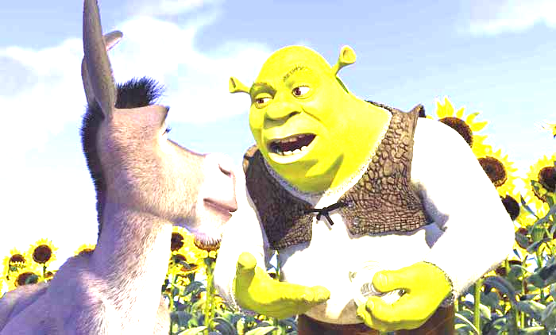
No notes. Fully implemented.
luminance
--gray
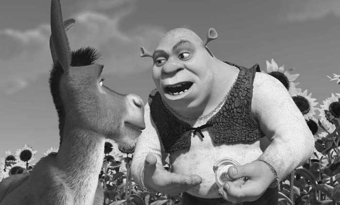
No notes. Fully implemented.
contrast
--contrast 2

No notes. Fully implemented.
saturate
--saturate 2
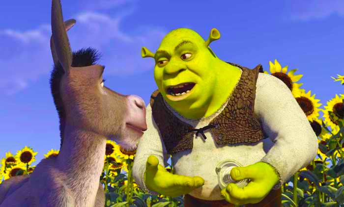
No notes. Fully implemented.
crop
--crop 380 290 550 400
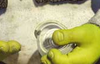
No notes. Fully implemented.
quantize
--quantize 3
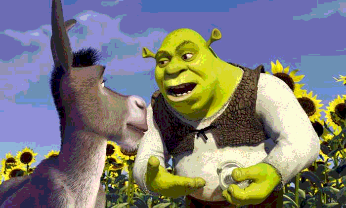
No notes. Fully implemented.
randomDither
--rDither 3
No notes. Fully implemented.
orderedDither2x2
--oDither2x2 3
No notes. Fully implemented.
floydSteinbergDither
--fsDither 3
No notes. Fully implemented.
blur3x3
--blur3x3
No notes. Fully implemented.
edgeDetect3x3
--edges3x3
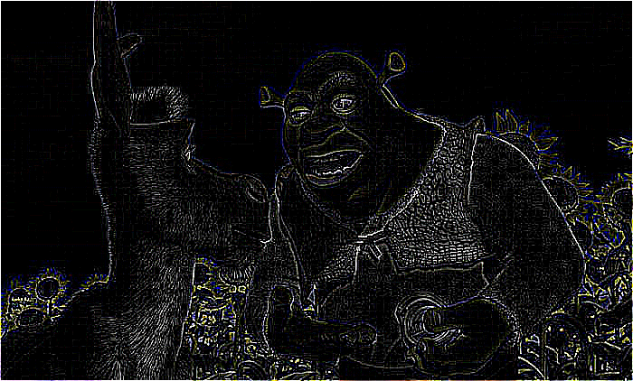
Fully implemented. Edges are initially pretty faint so the image is brightened to an extreme extent. It results in clean lines, but some color bleed. Also a little bit of noise.
nearestSample
No notes. Fully implemented.
bilinearSample
No notes. Fully implemented.
gaussianSample
Fully implemented. I'm not 100% sure that my filtering algorithm is correct. It seems to blur images during resampling, but I'm not sure if that's inherent to the Gaussian resampling process, as it's quite similar to Gaussian blurring.
scaleNearest
--scaleNearest 0.5
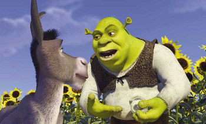
No notes. Fully implemented.
scaleBilinear
--scaleBilinear 0.5
No notes. Fully implemented.
scaleGaussian
--scaleGaussian 0.5
No notes. Fully implemented.
rotateNearest
--rotateNearest 30
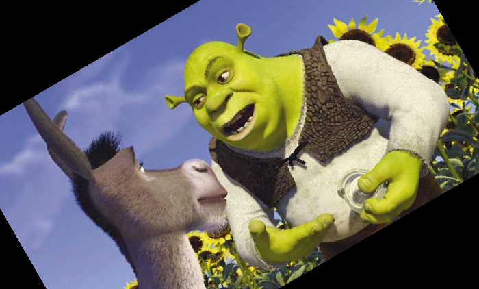
Partially implemented. While rotations work fine, the image is cropped. I couldn't figure out how to both resize the image to fit the rotated version and keep it centered in the new image.
rotateBilinear
--scaleBilinear 30
Partially implemented. See above.
rotateGaussian
--rotateGaussian 30
Partially implemented. See above.
setAlpha
No notes. Fully implemented.
composite
--composite overlay.bmp matte.bmp
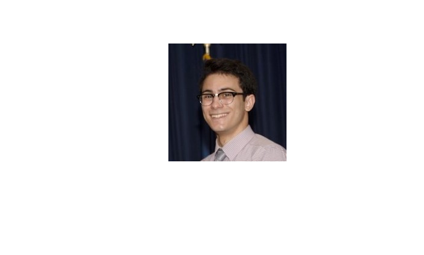 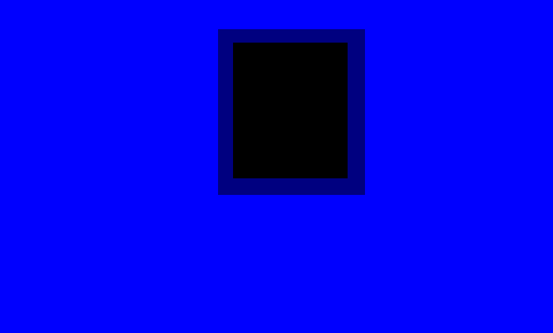
Fully implemented. Yes, it's a lazy composite but I was working with Paint.
fun
--fun
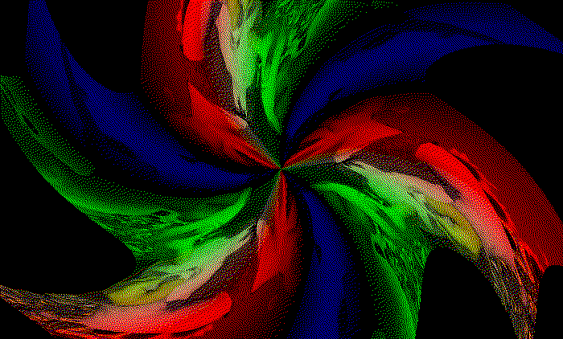
Fully implemented. It's basically a 3-armed swirl effect that varies the strength based on image size, scales color values according to their position in the swirl, and finally Floyd-Steinberg Dithers them at 1 bit for texture.
Myself with a very famous person
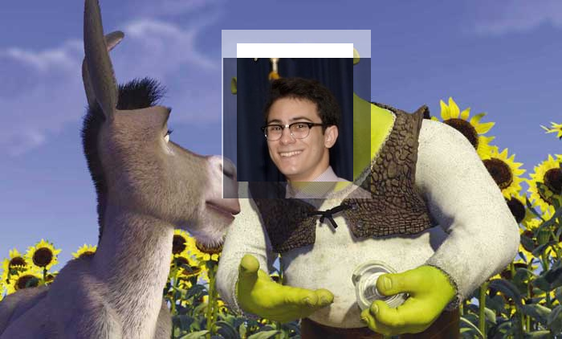Donkey is voiced by Eddie Murphy and is thus a famous (donkey) person.
BeierNeelyMorph
--bnMorph rock.jpg cat_rock.txt 0.5
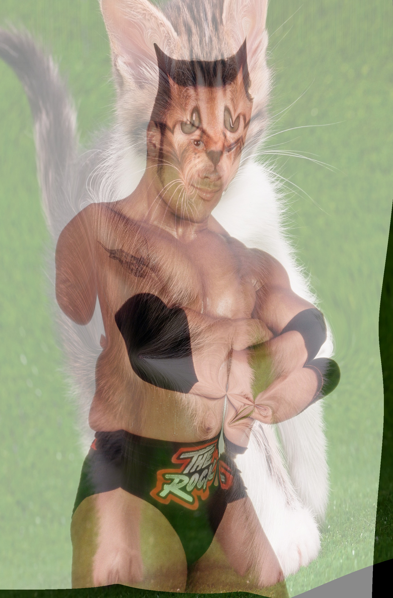

Fully implemented. All children functions are also fully implemented.
Art Contest Submission
--fun


Gif of my Beier-Neely Morphing filter

All of the images, lines, and commands used to create this gif are in
the
morph/ folder. In order to make the gif itself, I just used
an online tool.